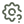
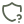
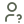

Second thought
|
think twice.
act once.
Czasami nie potrzebujesz porady.
Potrzebujesz innego spojrzenia.
Czasami nie potrzebujesz porady.
Potrzebujesz innego spojrzenia.
[ˈsek.ənd θɔːt] second thought
Druga perspektywa, właściwe pytania i sprawdzone podstawy — dla liderów, założycieli i menedżerów, którzy chcą rozwiązywać właściwe problemy, podejmować lepiej przemyślane decyzje i budować zespoły, które po prostu działają.
Bez przejmowania Twojej pracy i bez robienia czegokolwiek za Ciebie.
W codziennym pędzie najłatwiej skupić się na objawach: kolejne spotkanie, kolejny proces, kolejna zmiana w strukturze. Problem wraca w nowej formie, bo nikt nie zatrzymał się, żeby zapytać, co jest jego prawdziwym źródłem.
„Zespół nie dowozi na czas”
Niejasny podział odpowiedzialności
„Ludzie się nie komunikują”
Brak zaufania
„Mamy za dużo spotkań”
Brak decyzyjności
Second Thought daje chwilę zatrzymania — i kogoś, z kim można ją dobrze wykorzystać.
Najlepsze rozwiązania powstają, gdy zatrzymasz się na chwilę, spojrzysz na sytuację z drugiej perspektywy i wrócisz do podstaw.
Każdą formę można wybrać osobno albo połączyć — zależnie od etapu, na którym jest Twoja firma.
rozwiązania i decyzje zostają Twoje, a razem z nimi kompetencje.
zanim pojawią się rozwiązania, oddzielamy objawy od przyczyn i fakty od interpretacji.
większość problemów nie wynika z braku zaawansowanych narzędzi, tylko z zapominania o rzeczach najprostszych.
ktoś spoza Twojej organizacji — bez uwikłania i bez interesu w konkretnym rozstrzygnięciu.
wspólna praca na Twoich konkretnych przypadkach, a nie teoria zarządzania.
Masz temat, który nie daje Ci spokoju, decyzję do przegadania albo zespół, który dopiero budujesz? Bezpłatna rozmowa wstępna pomoże wybrać formę wsparcia najlepszą dla Ciebie.
Umów bezpłatną rozmowę wstępnąOd objawu do prawdziwego problemu
Poufna przestrzeń do pracy nad Twoją codziennością menedżerską: sytuacjami w zespole, decyzjami, trudnymi rozmowami i własną rolą. Nie raport z rekomendacjami do szuflady — wspólna praca na Twoich konkretnych przypadkach.
To nie jest doradztwo strategiczne — bez fuzji i przejęć, wejść na nowe rynki czy strategii rozwoju firmy. W centrum jest to, jak działa Twój zespół, jak przebiega współpraca i jak Ty działasz jako menedżer.
sytuacja z pracy: napięcie w zespole, decyzja, rozmowa, która poszła nie tak, projekt, który nie idzie zgodnie z planem.
pytania pomagają oddzielić fakty od interpretacji, objawy od przyczyn i spojrzeć na sytuację oczami innych — także na własną rolę.
dotarcie do sedna: ludzie, procesy, zasady, komunikacja, priorytety, a może własne nawyki.
kilka możliwych podejść wraz z kosztami i ryzykami. Wybór należy do Ciebie, bo to Ty najlepiej znasz swój kontekst.
na kolejnej sesji: co zadziałało, co nie i czego to nauczyło.
terminy się przesuwają, nie wiadomo, kto za co odpowiada, a „gotowe” znaczy dla każdego co innego.
brak standardów pracy, onboardingu i zasad planowania albo procedury, których nikt nie stosuje.
definicja ról, podział obowiązków, ustalanie priorytetów.
rozjeżdżające się oczekiwania zespołów, dostawców, partnerów czy instytucji, także międzynarodowo.
te same kłopoty wracają mimo kolejnych „łat”, bo nikt nie dotarł do przyczyny.
spadek zaufania, przemilczane konflikty, współpraca, która przestała działać.
gdzie uciekają czas i pieniądze; jak uzgodnić KPI i sposób liczenia wyników.
jak przejąć zespół, ustawić zasady i nie zgubić się w bieżączce.
Sparing dla Twoich analiz i decyzji
Masz analizę, plan albo decyzję, którą chcesz omówić, zanim pójdzie dalej? Thinking Partner to rozmowa z kimś spoza Twojej organizacji — bez uwikłania i bez interesu w konkretnym rozstrzygnięciu — kto zada pytania, których nikt inny nie zada.
Przy długiej pracy nad jednym tematem łatwo wpaść w koleiny: przyzwyczaić się do własnych założeń, przestać widzieć luki i odrzucać opcje niepasujące do pierwszej koncepcji. Współpracownicy rzadko powiedzą to wprost, a przełożonym nie zawsze chce się pokazywać niedokończoną myśl.
Analiza, wnioski i decyzja pozostają Twoje. Rola Thinking Partnera to druga głowa przy stole: słuchać, dopytywać, kwestionować i pomóc uporządkować myślenie. Efekt: mocniejsza analiza, którą rozumiesz i potrafisz obronić.
ludzie, finanse, czas, ryzyka, interesariusze.

na czym opiera się rozumowanie i co, jeśli któreś okaże się błędne.
czy rozważone zostały różne opcje, włącznie z niedziałaniem.

konsekwencje krótko- i długoterminowe, także uboczne i niezamierzone.

jak propozycję odbierze zespół, zarząd, klient czy inwestor.
czy wnioski wynikają z danych, a całość ma uzasadnione fundamenty.
Najlepiej, gdy masz już pomysł, plan lub wstępną analizę i chcesz ją rzetelnie sprawdzić, zanim pójdzie w świat.
scenariusze „co może pójść nie tak”, ich prawdopodobieństwo, skutki i zabezpieczenia (w duchu FMEA).
czy są kompletne, spójne, weryfikowalne i uwzględniają interesariuszy oraz ograniczenia techniczne.
czy założenia są realistyczne i co leży na ścieżce krytycznej.
reorganizacja, nowe procesy i zasady pracy, podział odpowiedzialności, alokacja ludzi.
czy kryteria są właściwe i czy umowa chroni to, co najważniejsze.
poczucie, że czegoś brakuje w analizie, ale nie wiadomo czego.
Często wystarcza jedna rozmowa; można też umawiać się regularnie przy kolejnych tematach.
Umów bezpłatną rozmowę wstępnąManual dla zespołów, które chcą działać dobrze od pierwszego dnia
Gotowy zestaw podstawowych zasad, zachowań i wartości, na których można zbudować kulturę nowej firmy, startupu lub zespołu. Nie teoria zarządzania, tylko konkret: co robić, jak i dlaczego to ma znaczenie.
Większość problemów w zespołach nie wynika z braku zaawansowanych narzędzi, tylko z zapominania o rzeczach najprostszych: jasnym mówieniu, czego się oczekuje, dotrzymywaniu słowa, informowaniu o opóźnieniach, ustaleniu, kto o czym decyduje. Osobno wyglądają niewinnie — razem prowadzą do chaosu i niedowiezionych projektów.
Kultura zespołu powstaje zawsze — świadomie albo przypadkiem. Nawyki kształtują się najszybciej w pierwszych tygodniach, a zmiana utrwalonych wzorców po roku czy dwóch kosztuje wielokrotnie więcej: czasu, pieniędzy i często dobrych ludzi.
cały model na jednej stronie: do powieszenia w biurze, do onboardingu, do wysłania zespołowi.
każdy fundament i zachowanie: co oznacza w praktyce, dlaczego ma znaczenie i co się dzieje, gdy go brakuje.
jak elementy się łączą: bez zaufania nie ma zdrowego konfliktu, bez konfliktu zaangażowania, bez zaangażowania odpowiedzialności, a bez niej wyniki zależą od przypadku.
Manual powstaje na bazie doświadczeń z międzynarodowych projektów, firmy technologicznej i wdrożeń IT, a także czerpie z teorii psychologicznych i podstaw neurobiologicznych.
Po premierze manual będzie można stosować samodzielnie lub jako punkt wyjścia do Sparringu menedżerskiego.